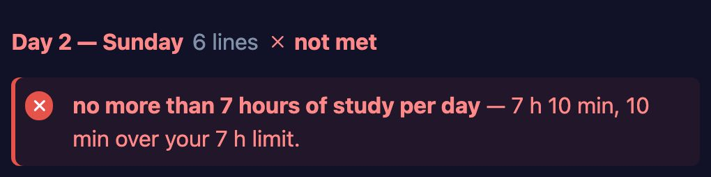
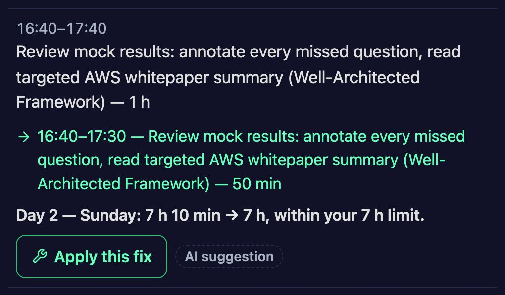

A second opinion for AI-made plans
People already ask an AI to plan a day trip, a dinner or a study weekend, and they give it hard limits: a budget, a time to be home, a thing that must not be in the plan. The plan comes back looking right, and the AI's own check says “looks good”. Then a detail breaks. Lunch for five costs twice what the plan says. Sunday runs ten minutes over. The satay sauce has peanuts in it.
Morpheus is built for exactly this. It is the web product of my research on checking what AI agents do (project page). Paste a plan from anywhere — ChatGPT, Claude, Gemini, a friend's text or your own notes — and write your rules the way you would say them: “home by 6”, “$60 max”. It checks every line of the plan against every rule.
What it does
- An independent check. The plan is not graded by the AI that wrote it. A rule counts as met only when our checker and a second AI reader agree, and the second reader can only make a result stricter.
- The exact line, and by how much. Not “might be a bit tight”, but “7 h 10 min, 10 min over your 7 h limit”, on the part of the plan where it happens.
- Fixes that keep the plan whole. Every fix is checked again before you see it. A fix that drops lunch, or only edits a number until the check passes, is never offered.
- It says who decided. Calculated, judged by AI, or confirmed by you: each answer has its own label. When a fact is missing, the row says “unclear” and asks you, instead of giving a false “met”.


What we measured
- Planted mistakes. Each test hides 20 mistakes in real plans. The default check found 19 to 20 of the 20, and it called no broken plan fine.
- Simulated users. In our latest test, AI agents playing users did 10 tasks. 9 ended with every rule met. By the plan's own numbers, the page marked no broken rule as met. A task cost $0.116, down from $0.259 one test earlier.
- Fewer questions. People do not like to answer many questions about their own plan. The next version (not on the site yet) asks only when the plan cannot be used without your answer. Shown again with that rule, the 593 task pages among 1,389 saved results needed 0.26 answers per task on the first visit, down from 1.32.
What surprised us
The arithmetic was not the hard part; the world was. One test plan took a family up 香山 in Beijing by cable car. A web search of the plan's key facts found that the cable car is closed for renovation during the October 2026 red-leaf festival (北京晚报, 16 October 2026). The plan did not know about it. On another test trip, for five people, the fix step saw that five people need two taxis, not one.
So the next step is a web check of each plan's key facts, such as opening hours and closures, before the page says that a plan works.
All numbers are from our internal tests in October 2026, with planted mistakes and with simulated users (AI agents), not real users. Morpheus is in an invite-only beta and is free during the beta. To ask for an invite, write to info@morpheusplan.com. More on the product's own blog: how the checker decides.
Earlier: Morpheus: checking what an AI agent does against what you asked · project: Morpheus.